5.1. Дискретное преобразование Фурье.
Если {Х(m)} означает последовательность
Х(т), т=0, 1, N—1 конечных действительных или комплексных чисел, то дискретное или
конечное преобразование Фурье этой последовательности определяется как n—1
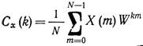
Где 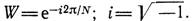
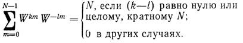
Согласно выражению (5.1.1) имеем
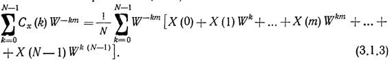
Используя соотношение (5.1.2)
в уравнении (5.1.3), получаем обратное дискретное преобразование Фурье (ОДПФ), которое
определяется следующим образом:
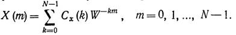
Так как выражения (5.1.1)
и (5.1.4) составляют пару преобразований, то представление временной последовательности
{Х(m)} через экспоненциальные
функции Wkm является единственным.
Функции Wkm являются N-периодическими, т. е.
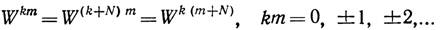
Следовательно, последовательности
{Cx(k)} и {Х(m)), определяемые выражениями (5.1.1) и (5.1.4), также являются
N-периодическими. Иначе говоря, последовательности
{Х(m)} и {Cx
(k)} удовлетворяют следующим условиям:
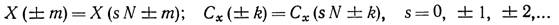
Пользуясь выражениями (5.1.5)
и (5.1.6), можно показать, что
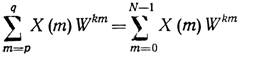
и
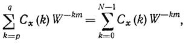
когда p и q удовлетворяют
условию |р—q|=N—1. Пару преобразований, определяемых выражениями (5.1.1) и (5.1.4),
в соответствии с принятым соглашением [2] удобно обозначать как Х(m) <->Cx (k).
5.2. Матричное представление корреляции и свертки
Ранее понятия корреляции и
свертки были введены с помощью теорем корреляции и свертки. Если {Х(m)} и {Y(m)} — две N-neриодические последовательности
действительных чисел, то операции корреляции и свертки соответственно определяются
как
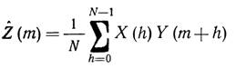
и
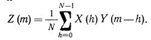
Корреляция. Пусть в выражении (5.2.1) N=4, тогда имеем следующую систему
соотношений:
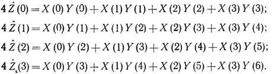
Так как {Y(m)} имеет период,
равный 4, то выражение (5.2.3) может быть представлено в матричной форме как
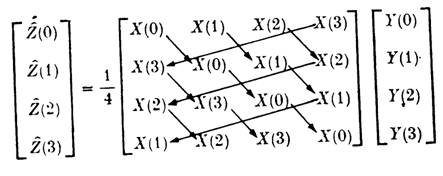
Свертка. При N=4 из выражения (4) следует
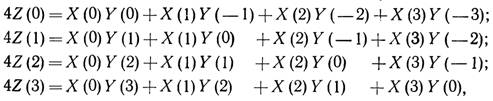
т. e.
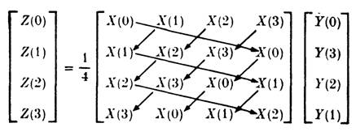
Выражения (5.2.4) и (5.2.6)
отражают существование простых правил записи в матричной форме операций корреляции
и свертки, показанных стрелками. Эти правила легко переносятся на общий случай
записи матричных соотношений.
Корреляция.
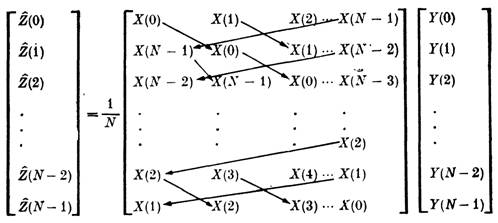
Свертка.
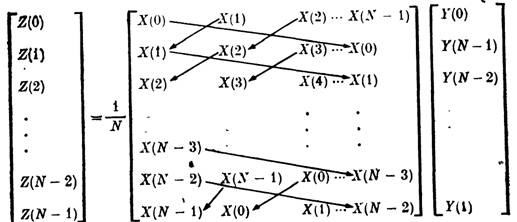
В заключение отметим, что
если последовательности X{m) } и {Y(m)} аналогичны друг другу, то из выражения (5.2.1) следует, что
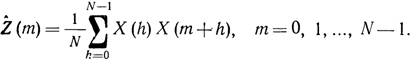
Это выражение определяет автокорреляцию
последовательности {Х(m)}.
5.3. Спектр мощности, амплитудный и фазовый спектры.
Понятия спектр мощности, амплитудный
и фазовый спектры основываются на результатах последнего параграфа, показывающих
непосредственную связь коэффициентов ДПФ, полученных с помощью преобразования Фурье
и разложения в ряд Фурье.
Спектр мощности. Напомним теорему Парсеваля, которая в выражении (5.1.24) записывалась
следующим образом:
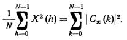
Если x(t) описывает форму
напряжения или тока, а нагрузка предполагается чисто активной и равной 1 Ом, то
левая часть выражения (5.3.1) представляет собой среднюю мощность, рассеиваемую
резистором с сопротивлением в 1 Ом. Каждая величина |Cx(k)|2 в (5.3.1) представляет собой
мощность, содержащуюся в гармонике, имеющей частоту с номером k. Поэтому спектр мощности ДПФ определяется
как
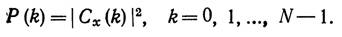
Из выражения (5.3.2) можно
сделать следующий вывод: имеется только (N/2+l) независимых спектральных точек
ДПФ, когда {Х(m)} является последовательностью действительных чисел. Это следует из свойства
комплексной сопряженности, определяемого выражением (3.2.2). Этими точками являются
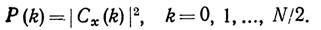
Из теоремы сдвига (3.2.4)
следует, что спектр мощности, определяемый выражением (5.3.2), инвариантен к сдвигам
N-периодической временной
последовательности {Х(m)}.
Амплитудный спектр легко определить
с помощью спектра мощности следующим образом:
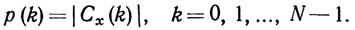
Амплитудный спектр также инвариантен
к сдвигам временной последовательности {Х(m)}.
Фазовый спектр. Для заданной
временной последовательности Х(m), m = 0, 1,.., N—1, фазовый спектр определяется из следующего выражения:
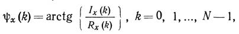
где Rx(k) и Ix(k) — соответственно действительная и мнимая части Cx(k). Как и в случае спектра мощности, в выражении
имеется только (N/2+1) независимых точек фазового спектра ДПФ, если {Х(m)} — последовательность действительных
чисел. Независимыми спектральными точками являются точки 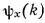
Из выражений (5.3.1) и (5.3.5)
вытекает фундаментальное свойство фазового спектра, заключающееся в инвариантности
к умножению {Х(m)} на константу. Кроме того, из выражения (5.3.5) следует, что точки фазового
спектра отображают ориентацию Cx(k) в двумерном пространстве, как показано
на рис. 5.1.
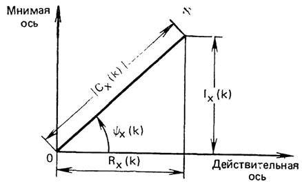
Рис. 5.1. Геометрическая интерпретация
фазового
В заключение отметим следующие свойства ДПФ спектра последовательности
действительных чисел {Х(m)}, которые вытекают из свойства комплексной сопряженности:
1.
Спектр
мощности, определенный выражением (5.3.2), представляет собой четную относительно
точки k = N/2 функцию.
2.
Фазовый
спектр, определенный выражением (5.3.5), представляет собой нечетную относительно
точки k = N/2 функцию